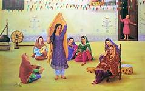
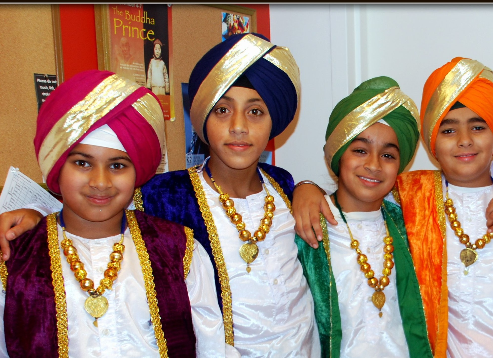
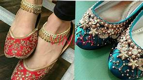
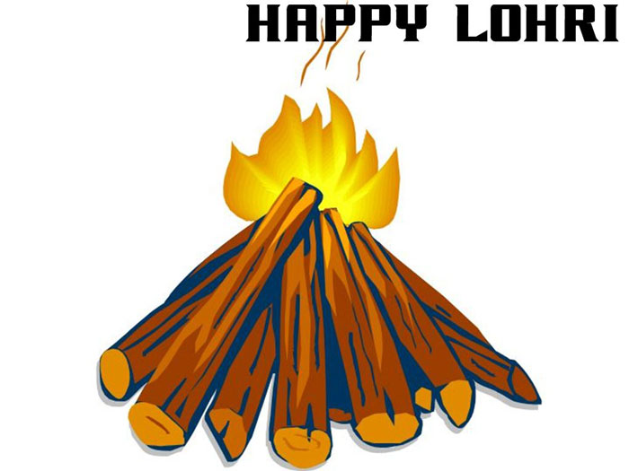

Content
The culture of the Punjab encompasses the spoken language, written literature, cuisine, science, technology, military warfare, architecture traditions,sacrifices, values and history of the Punjabi people native to the northern part of the Indian subcontinent. The term 'Punjabi' can mean both a person who lives in Punjab and also a speaker of the Punjabi language. This name originates from the Persian language 'panj', (five), and 'ab', (water). Panjab or Punjab: land of the five rivers. Indus River (the largest river in this five river system), and the five other rivers to the south eventually join Indus or merge into it later in the downstream of the Punjab valley. All the rivers start and flow out of the Himalayas. These other five rivers are Jhelum River, Chenab River, Ravi River, Beas River and Sutlej River.
Due to the large number of Punjabi people distributed throughout the world, especially Pakistan and India, many people are increasingly experiencing the culture and becoming influenced by it[citation needed]. Glimpses of traditional Punjabi culture can be seen in the Western world (e.g. the U.S., the UK, the EU, Canada, Australia, Africa and the Middle East).Naturally people influence each other wherever they settle and live. Punjabi culture is evident from Punjabi philosophy, poetry, spirituality, education, artistry, music, cuisine, and architecture.
Similar migrations by or invasions into the Punjab, in the past many centuries, were by the Aryans, Dravidians, Scythians, Portuguese, Spaniards, Armenians, Greeks or Alexander the Great which reached as far as the Beas River in the Punjab[citation needed], Mongols Arabs, Persians, Afghans, Turko-Persians (Mughals) and then the Europeans (British) came to Punjab for various economic reasons of their own and its fertile agricultural lands and abundance of water resources in its five large rivers flowing down from the Himalayas through the Punjab valley[citation needed]. These immigrants influenced the people of Punjab and, in turn, were influenced by the then prevailing culture of the Punjab.The culture of Punjab in the Middle Ages was extremely diverse dependent upon an individual's caste, community, religion and village[citation needed]. An array of cultures can be found historically .The main cultures that arose in the Punjab during the Medieval Age at the beginning of this era was of strong Indo-Aryan dominance.
About Us
Punjabi Culture is one of the famous culture in india.
- Music
- Dance
- Food
- Crafts
- Festivals
Description
Bhangra is one of the many Punjabi musical art forms that is increasingly listened to in the west and is becoming a mainstream favourite.[3] Punjabi music is used by western musicians in many ways, such as mixing it with other compositions to produce award-winning music.citation needed] In addition, Punjabi classical music is increasingly becoming popular in the west. citation needed Devotional songs are played by dhaddi jatha groups, with instruments like sarangi and dhadd drums.
Giddha a popular folk dance of women in Punjab region of India and Pakistan. The dance is often considered derived from the ancient dance known as the ring dance and is just as energetic as bhangra; at the same time it manages to creatively display feminine grace, elegance and flexibility. It is a very colourful dance form which is now copied in all regions of the country. Women perform this dance mainly at festive or social occasions. The dance is followed by rhythmic clapping and a typical traditional folk song is sung by the aged ladies in the background.
Giddha varies from other forms of traditional Punjabi dance in that it does not require the two-headed barrel dhol drum to be performed. Instead, women stand in a circle formation and clap rhythms. A lead woman will recite a boli (lyrics) with a refrain that the entire circle then repeats. The whole form of a giddha song is worked through in this call and response form. Giddha details stories of women's lives, including sexuality.
Giddha said to be originated from the ancient ring dance which was dominant in Punjab in the olden days. Women show the same level of energy which the men show while performing bhangra. Giddha displays a traditional mode of performing Punjabi femininity, as seen through dress, choreography, and language. Since the Partition of India in 1947 and the division of Punjab into West Punjab (Pakistan) and East Punjab (India), folk dances of Punjab on the Indian side of the border have been consolidated, staged, and promoted as iconic expressions of Punjabi culture.While the form of giddha was not seriously affected by Partition, Gibb Schreffler writes that it has been classified as the women's dance counterpart to the male form bhangra, despite that not entirely being the case.
As Punjabi dance forms became codified in the 1960s-onward, bhangra and giddha competitions have become popular throughout Punjab and the Punjabi diaspora. Punjabi dance forms have also spread through collegiate-level dance troupes in Punjab since the 1960s and in South Asian student groups in the US, UK, and Canada since the 1990s.

Punjabi Food
Punjabi Cuisine is one of the most distinct and popular Indian cuisines and comes from the region of Punjab situated partially in India and Pakistan. It offers a vast variety of delectable and exotic vegetarian and non-vegetarian dishes that are prepared with varied traditional culinary styles, particularly the tandoori style. The exotic and appetizing tandoor items and various other mouth-watering and finger licking dishes having rich, spicy and buttery flavour savoured with Punjabi Basmati rice of varied forms and special Punjabi breads like Tandoori Roti and Naan have not only made the gastronomists crave for more but has also garnered the cuisine much fame outside the Punjab region taking it to places around the globe like Canada and the UK.
Punjab with its rich cultivating lands has traditionally been an agrarian society since the time of the ancient Harappan Civilization. The land in the Indian Punjab is ideal for growing wheat and is called the ‘Granary of India’ or ‘India's bread-basket’. The two major crops cultivated by the farmers of Punjab are rice and wheat, which remain the principal crops grown during the Kharif season and the Rabi season respectively. The indigenous Punjab Basmati rice has been the pride of the region being grown since time immemorial. The practice of multi-cropping is quite common in Punjab which also grows sugarcane, bajra (pearl millet), jowar (great millet), barley, potatoes, vegetables and fruits among others. Cattle primarily used for agriculture and dairy farming in the region form the major source of dairy products starting from ghee, butter, clarified butter, curd, paneer (cottage cheese) to a wide variety of sweet dishes. Thus the staple foods grown locally including the dairy products form an integral part of the local diet.
Traditionally, ghee, butter, clarified butter, paneer and sunflower oil are used to cook various Punjabi dishes. However, nowadays ghee, cream and butter are liberally used in restaurants to prepare Punjabi dishes while the more health conscious households have mostly switched to sunflower oil or other refined oils. Traditional Indian spices grounded in Ghotna, a conventional kitchen device to grind and crush spices and other ingredients, are generally used in preparing the dishes. Kasoori methi or dried fenugreek leaves, onion, garlic and ginger are used extensively to prepare various Punjabi delicacies. Various food additives like vinegar, bulking agents like starch, colouring agents like zarda and condiments like cumin, coriander, dried methi leaves and black pepper are used to enhance the taste and flavour of various dishes. Fermented foods like pickles are also used to prepare many Punjabi cuisines. One of the famous ones is Achari Gosht made of chicken and pickles. Again pickles, particularly the ones made of mango popularly compliment many Punjabi dishes like the stuffed parathas, especially in the rural areas of Punjab region.
Punjabi Clothing
In the ancient Punjab region, people wore cotton clothing. The tops for both genders reached to the knees. A scarf was worn over the tops which would be draped over the left shoulder and under the right. A large sheet would be further draped over one shoulder which would hang loose towards the knees. Both sexes wore a dhoti around the waist.Modern Punjabi dress has retained this outfit but over its long history has added other forms of dress.
The Punjab region had a flourishing industry in cotton during the 19th and early 20th centuries, when various kinds of coarse cotton cloths including lungi, khes, datahi, chadders, coasting, shirting, curtains, susi, tehmats, durris, towels, dusters, patkas etc. were manufactured in Hoshiarpur, Gurdaspur, Peshawar, Lahore, Multan, Amritsar, Ludhiana, Jhang, Shahpur, Jalandhar, Delhi, Gurgaon, Rohtak, Karnal, Rewari, Panipat etc.[2] This cotton industry added to the richness of Punjabi clothing which exhibits Punjab's rich and vibrant culture in its dresses. Various types of dresses are worn based on different Punjabi festivals, local events and ceremonies.
Along with different traditional dresses special types of ornaments are also very common.
The use of the suthan in the Punjab region also called suthana in Punjabi is a survival of the ancient svasthana. Svasthana referred to a lower garment which can be described as a type of trousers. The svasthana was in use amongst the rulers in the Mauryan times(322–185 BCE), amongst the ruling classes in North India during the Kushan Empire between the 1st and 3rd centuries C.E,[8] during the Gupta Empire between 4th and 6th centuries C.E. and during King Harsha's rule during the 7th century C.E.
The Punjabi suthan is a direct variation of the svasthana which can either be loose to above the ankles and tight around the ankles, or loose to the knees and tight to the ankles. The suthan is a male and female garment but its use is particularly important in the Punjabi suthan suit whereby it is worn by women with a kurti or kurta. It is also a part of the Punjabi ghagra outfit. Other variations include the choga (robe) and suthan combination.
The kurta with its side slits in the Punjabi kurta can be traced to the 11th century C.E. female kurtaka worn in parts of north India. The kurtaka was a short shirt, with sleeves extending from the shoulders, to the middle of the body, and had slashes on the left and the right sides.This is the same as the modern Punjabi kurta which has side slits and is worn by women in the Punjab region as do men. The kurta also draws inspiration from the jama and the Punjabi angarkha. The kurta can be worn with a salwar, suthan, tehmat, lungi, dhoti, Punjabi ghagra and jeans.
The Punjabi suit is the traditional dress of women in the Punjab region. It is made up of a kurta or kameez and a straight cut salwar. In some parts of the Punjab region, men also wear the Punjabi suit.
The Punjabi suit is cut differently to the styles worn in Balochistan and Afghanistan and is known as a "Punjabi suit"with the kameez being cut straight and flat with side slits (which is a local development as earlier forms of kameez did not have side slits).The salwar is wide at the top but fits closely to the legs and is gathered at the ankles.[25] The Punjabi salwar is also cut straight and gathered at the ankles with a loose band reinforced with coarse material. In rural Punjab, the salwar is still called the suthan.[26] The Punjabi suit is popular in other regions of the subcontinent, such as Mumbai and Sindh.It is also popular in Afghanistan, where it is called the Punjabi.


Punjabi Festivals
Punjabi festivals are various festive celebrations observed by Punjabis in Pakistan, India and the diaspora Punjabi community found worldwide. The Punjabis area diverse group of people from different religious background that affects the festivals they observe. According to a 2007 estimate, the total population of Punjabi Muslims is about 90 million (~75% of all Punjabis), with 97% of Punjabis who live in Pakistan following Islam, in contrast to the remaining 30 million Punjabi Sikhs and Punjabi Hindus who predominantly live in India.
The Punjabi Muslims typically observe the Islamic festivals, do not observe Hindu or Sikh religious festivals, and in Pakistan the official holidays recognize only the Islamic festivals. The Punjabi Sikhs and Hindus typically do not observe these, and instead observe historic festivals such as Lohri, Basant and Baisakhi as seasonal festivals. The Sikh and Hindu festivals are regional official holidays in India, as are major Islamic festivals. Other seasonal Punjabi festivals in India include Teejon (Teeyan) and Maghi. Teeyan is also known as festival of womens as women's enjoy with their friends .On the day of maghi people fly kites and eat their traditional dish khichdi.
The Punjabi Muslim festivals are set according to the lunar Islamic calendar (Hijri), and the date falls earlier by 10 to 13 days from year to year.The Hindu and Sikh Punjabi seasonal festivals are set on specific dates of the luni-solar Bikrami calendar or Punjabi calendar and the date of the festival also typically varies in the Gregorian calendar but stays within the same two Gregorian months.
Lohri is a popular winter time Punjabi folk festival, celebrated primarily by Sikhs and Hindus from the Punjab region of Indian subcontinent.According to Chauhan (1995), all Punjabis, including Muslims and Christians celebrate Lohri in Punjab, India. Lohri is celebrated on the last day of the month of poh (January).
Many people believe the festival commemorates the passing of the winter solstice. Lohri is observed the night before Makar Sankranti, also known as Maghi, and according to the solar part of the lunisolar Bikrami calendar and typically falls about the same date every year (January 13).
Lohri is an official gazetted holiday in the state of Punjab (India),but it is not a holiday in Punjab (Pakistan).It is, however, observed by Sikhs and some Punjabi Muslims and Christians in Pakistan as well.

Maghi is a Sikh festival and one of their largest annual gatherings near Gurudwaras.The same festival is called Makar Sankranti by Hindus, who gather near Hindu temples. The Magha Mela, according to Diana L. Eck – a professor at Harvard University specializing in Indology, is mentioned in the Hindu epic, the Mahabharata, thus placing this festival to be around 2,000 years old.[34] Many go to sacred rivers or lakes and bathe with thanksgiving to the sun.
People visit the Gurdwara or the Mandir. The festival marks the increase in daylight.[35] Maghi is celebrated by people eating kheer such as Rauh di kheer which is an old dish where rice is cooked in sugarcane juice. The dish is prepared in the evening before Maghi and is kept to cool. It is served cold next morning on Maghi with red-chilly mixed curd. In some parts of Punjab, India, it is also traditional to eat kichdi mixed with lentils, consume raw sugarcane and jaggery, Fairs are held at many places on Maghi. Sports festivals are also held in the region
Basant is an ancient Hindu spring festival dedicated to god Kama as well as goddess Saraswati.[38] Its link with the Hindu god of love and its traditions have led some scholars to call it "a Hindu form of Valentine's Day". The festival is also observed by Punjabi Sikhs. The traditional colour of the day is yellow and the dish of the day is saffron rice. People fly kites.
In North India, and in the Punjab province of Pakistan, Basant is celebrated as a spring festival of kites. The festival marks the commencement of the spring season. In the Punjab region (including the Punjab province of Pakistan), Basant Panchami has been a long established tradition of flying kites and holding fairs.
Punjabi Muslims have treated parts of the festival as a cultural event. In Pakistan however kite flying has been banned starting in 2007 with officials stating that it uses dangerous, life-threatening substances on the strings.The festival ban was confirmed by the Pakistan Punjab state chief minister Shehbaz Sharif in 2017. According to some analysts, "the festival was banned due to pressure from hardline religious and extremist groups like the Hafiz Saeed-led Jamaat-ud Dawah, which claimed the festival had “Hindu origins” and was “un-Islamic”.
welcomes the monsoon season and the festival officially starts of the day of Teej and last for 13 days. The seasonal festival involves women and girls dancing Gidha and visiting family. The festival is observed in Punjab, India.
The festival is celebrated during the monsoon season from the third day of the lunar month of Sawan on the bright half, up to the full moon of sawan, by women. Married women go to their maternal house to participate in the festivities. In the past, it was traditional for women to spend the whole month of Sawan with their parents.
Teej is historically a Hindu festival, dedicated to Goddess Parvati and her union with Lord Shiva, one observed in northern, western, central and Himalayan regions of the Indian subcontinent.
Other festivals observed by Punjabi Hindus and Sikhs include Diwali, Dussehra, Rama Navami, Bandi Chhor Divas and Gurpurabs. Raksha Bandhan in the Punjab is known as 'Rakhri' and is celebrated as a brothers and sisters day.
Vaisakhi
Vaisakhi is a religious festival of Sikhs and Hindus. Vaisakhi is also a harvest festival for people of the Punjab region.[46] In the Punjab, Vaisakhi marks the ripening of the rabi harvest. Vaisakhi also marks the new year for Punjabi Sikhs and Hindus.Punjabi Muslims observe the new year according to the Islamic calendar.
The harvest festival is celebrated by Punjabi Sikhs and Hindus.
According to Aziz-ud-din Ahmed, Lahore used to have Baisakhi Mela after the harvesting of the wheat crop in April. However, adds Ahmed, the city started losing its cultural vibrancy in 1970s after Zia-ul-Haq came to power, and in recent years "the Pakistan Muslim League (N) government in Punjab banned kite flying through an official edict more under the pressure of those who want a puritanical version of Islam to be practiced in the name of religion than anything else".[50] Unlike the Indian state of Punjab that recognizes the Vaisakhi Sikh festival as an official holiday,the festival is not an official holiday in Punjab or Sindh provinces of Pakistan where Islamic holidays are officially recognized instead. However, On 8 April 2016, Punjabi Parchar at Alhamra (Lahore) organised a show called Visakhi mela, where the speakers pledged to "continue our struggle to keep the Punjabi culture alive" in Pakistan through events such as Visakhi Mela.Elsewhere Besakhi fairs or melas are held in various places including Eminabad[52] and Dera Ghazi Khan.
THANKYU!!!!!!!